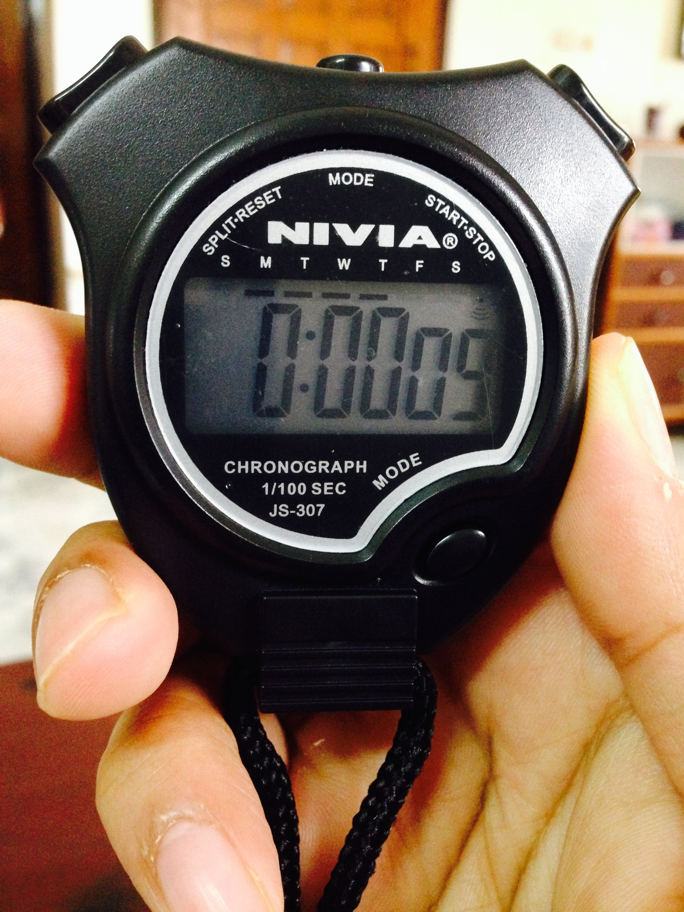

Hello, I am glad you could make it to my home on the Internet! I am better known as Pransu. I count the votes in which Aashu (my younger brother) participates. I love watching Brain Games on National Geographic Channel, and I hate interruptions. I invented the game of "Phoos Phoos", which essentially involves going around on a bed while making the "phoos phoos" sound with mouth. I can only sleep while touching a special blanket which has been with me since my birth. I LOVE space and astronomy!
I am ten years old, and currently live in Hatigaon, Guwahati, Assam, India, Asia, Earth, Solar System, Milky Way, Local Group, Universe. Here are my favourites:
Flower: Lotus
Animal: Tiger
Vegetable: Potato
Fruit: Banana
Food: Paneer
Colour: Blue
Song: Party with Bhoothnath
Hobby: Playing keyboard
TV program: Brain Games
Game: Chess
Car: Duster
Dream Job: Astronomer and Astronaut
Place I Would Like to Visit: Moon
Latest News
I can solve one face of Rubik's cube.
I can start and stop the stopwatch using a single finger in 9ms (proof below), matching my Dad's best yet!

Content contributed by: Neelav Prasad Talukdar July 9, 2014